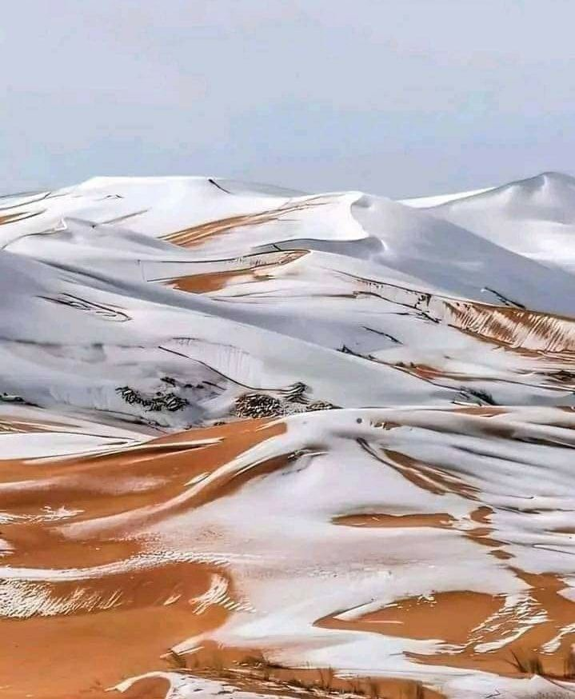

Explore the Majestic Sahara Regions
Discover the diverse landscapes and unique cultures hidden within the world's largest hot desert.
Discover the diverse landscapes and unique cultures hidden within the world's largest hot desert.
Venture into the towering dunes of Erg Chebbi, near Merzouga. Experience camel treks, spend nights in traditional Berber camps under a sky full of stars, and witness breathtaking desert sunrises and sunsets.

Explore Douz, the 'Gateway to the Sahara,' and traverse the vast salt lake of Chott el Djerid. Discover ancient Roman ruins, palm groves, and traditional desert life.

Journey to the otherworldly White Desert, famous for its unique chalk rock formations sculpted by wind. This region offers incredible stargazing and a truly surreal landscape.
A UNESCO World Heritage site, Tassili n'Ajjer is a vast plateau in the Algerian Sahara known for its prehistoric cave art and unique geological formations, offering a journey back in time.

A UNESCO World Heritage site, Tassili n'Ajjer is a vast plateau in the Algerian Sahara known for its prehistoric cave art and unique geological formations, offering a journey back in time.

A UNESCO World Heritage site, Tassili n'Ajjer is a vast plateau in the Algerian Sahara known for its prehistoric cave art and unique geological formations, offering a journey back in time.